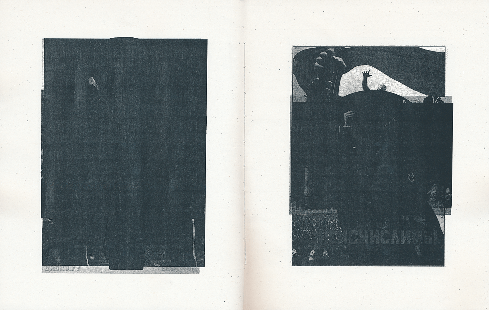
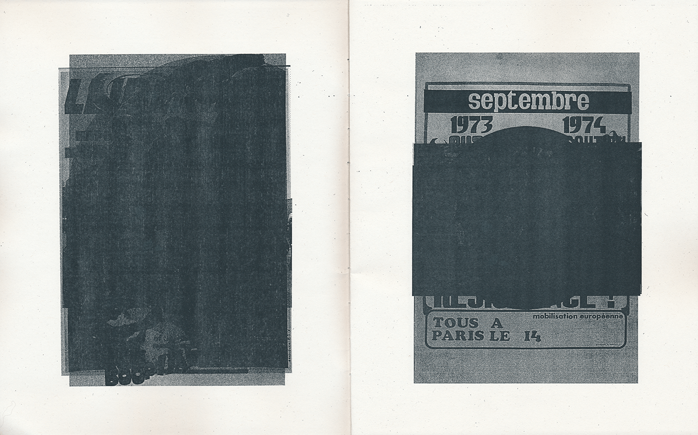
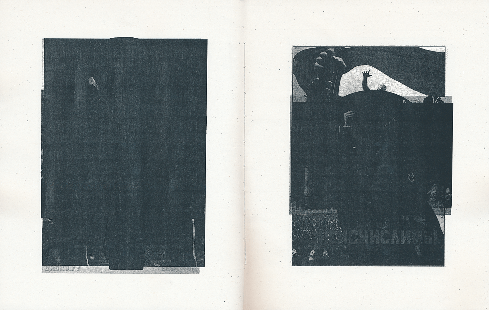
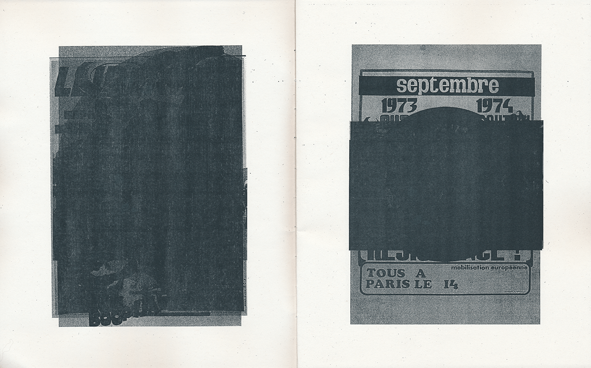

Project
Process book
GMDH02_00102 — Nat Kukina
This project is a visual and contextual exploration of the symbol of a clenched fist. This symbol has been used as a political gesture for more than a century in different parts of the world by groups that stand on opposite ends of the political spectrum. Out of that, a question naturally arises: what does an image of a raised fist signify in 2020 and what effect does its history have on us.
The project took the form of a series of four posters and several publications. All of the artefacts are centred around a collection of more than 300 images with a clenched fist dating from 1917 to 2020. They explore the uncertainty and fractured nature of the symbol, as well as its relationship with written slogans that accompany the fist on many of found artefacts.
Full project archive

 


